23. Преобразование координат TF2 в ROS2
1. Введение в TF2
Системы координат — это очень знакомое понятие и ключевая основа в робототехнике. В полноценной робототехнической системе существует множество систем координат. Как управлять взаимными позиционными отношениями между этими системами координат? ROS предоставляет мощный инструмент управления системами координат: TF2.
Справочник по системе TF: tf: The transform library | IEEE Conference Publication | IEEE Xplore
2. Системы координат в робототехнике
Системы координат также крайне важны в системах мобильных роботов. Например, центральная точка мобильного робота — это базовая система координат (Base Link), а положение радара называется laser link. По мере движения робота одометрия накапливает информацию о его положении. Референсная система для этого положения называется системой координат одометрии (odom). Сама одометрия подвержена накопленным ошибкам и дрейфу. Референсная система для абсолютного положения называется системой координат карты (map).
Отношения между слоями систем координат сложны. Некоторые из них относительно фиксированы, другие постоянно меняются. Даже, казалось бы, простые системы координат могут стать сложными в пространственном контексте, что делает хорошую систему управления системами координат крайне важной.
Базовая теория преобразований систем координат объясняется в каждом учебнике по робототехнике. Её можно разбить на два компонента: перемещение (translation) и вращение (rotation). Эти компоненты описываются матрицей 4×4. При построении системы координат в пространстве преобразование между этими двумя компонентами по сути является математическим описанием векторов.
Базовые принципы функциональности TF в ROS инкапсулируют эти математические преобразования. Подробную теоретическую информацию можно найти в учебниках по робототехнике. Мы в первую очередь объясним, как использовать систему управления координатами TF.
3. Операции с TF через командную строку
Сначала рассмотрим пример с двумя черепахами, чтобы понять алгоритм следования робота на основе систем координат. Для удобства демонстрации этот урок лучше выполнять в виртуальной машине
3.1 Установка соответствующих инструментов
Для этого примера требуется установить соответствующие пакеты функций, пример симулятора черепах TF и инструмент визуализации дерева TF.
sudo apt install ros-${ROS_DISTRO}-turtle-tf2-py ros-humble-tf2-tools
sudo pip3 install transforms3d
sudo apt install ros-${ROS_DISTRO}-rqt-tf-tree
3.2 Запуск
Затем можно запустить систему с помощью файла запуска. После этого можно управлять одной из черепах, а другая будет автоматически следовать.
ros2 launch turtle_tf2_py turtle_tf2_demo.launch.py
ros2 run turtlesim turtle_teleop_key
Когда мы управляем движением одной черепахи, другая черепаха будет следовать за ней.

3.3 Просмотр дерева TF
ros2 run rqt_tf_tree rqt_tf_tree
Вы можете просмотреть дерево преобразований TF в окне rqt.
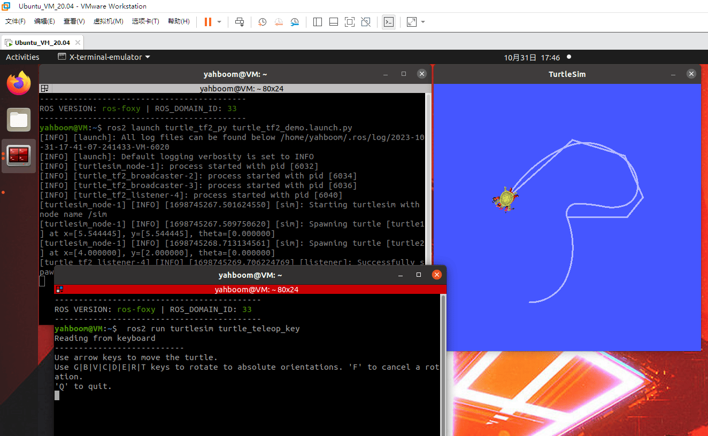
3.4 Запрос информации о преобразовании координат
Просто просмотреть структуру системы координат недостаточно. Если мы хотим узнать конкретную взаимосвязь между двумя системами координат, можно использовать инструмент tf2_echo:
ros2 run tf2_ros tf2_echo turtle2 turtle1
После успешного запуска терминал будет многократно выводить значения преобразования системы координат.
3.5 Визуализация системы координат
- Запустите rviz2 и добавьте плагин отображения TF.
rviz2
Установите референсную систему координат в rviz2 на "world", добавьте плагин отображения TF, а затем анимируйте черепаху. Оси координат в rviz начнут двигаться. Не правда ли, так намного интуитивнее?
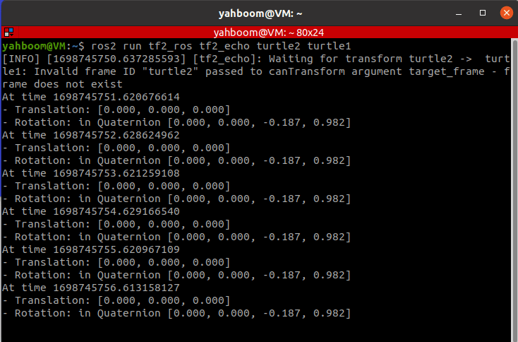
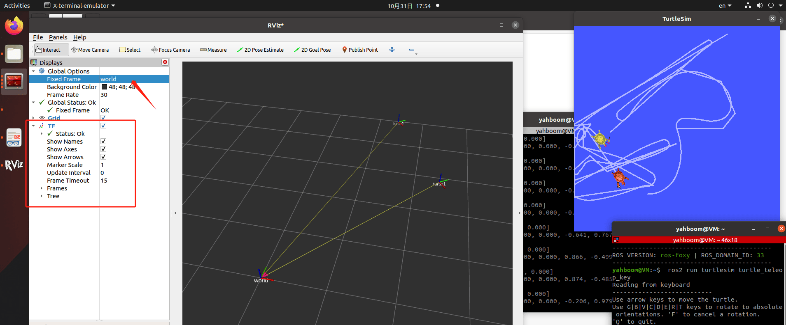
4. Статическое преобразование координат
Статическое преобразование координат означает фиксированное относительное положение между двумя системами координат. Например, положение между радаром и base_link фиксировано.
Пример: для удобства демонстрации этот урок лучше выполнять в виртуальной машине
4.1. Публикация позы от A к B
ros2 run tf2_ros static_transform_publisher 0 0 3 0 0 3.14 A B
4.2. Мониторинг/получение отношений TF
ros2 run tf2_ros tf2_echo A B
4.3. Визуализация в RVIZ
- Запустите rviz2 и добавьте плагин отображения TF.
rviz2
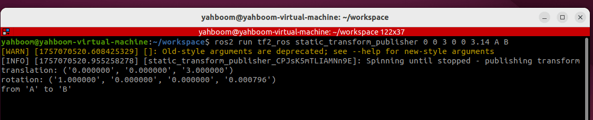
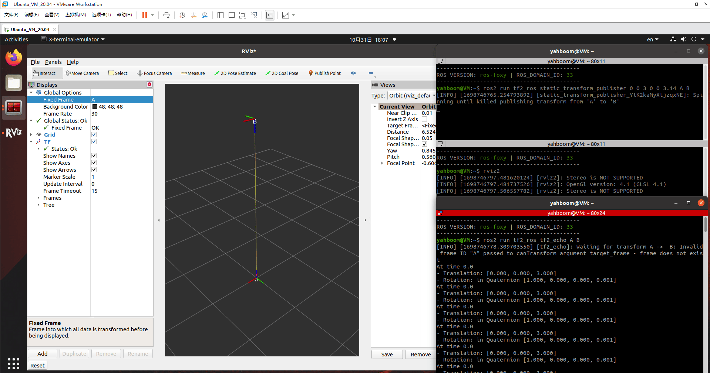
5. Введение в пример
В предыдущем уроке мы объяснили отношение TF в примере следования черепах, предоставленном системой. В этом уроке мы реализуем эту функциональность самостоятельно.
Содержание курса:
- Реализация примера следования черепахи через программирование
- Освоение реализации динамического broadcaster (передатчика) через программирование
- Освоение реализации преобразований координат между отслеживаемыми системами координат через программирование
- Освоение использования ПИД-регулятора для преобразования физических величин (расстояние, угол) в переменные управления скоростью
Продвинутый материал:
- Понимание способности системы TF преобразовывать системы координат во временном измерении
6. Анализ принципов работы примера следования черепахи
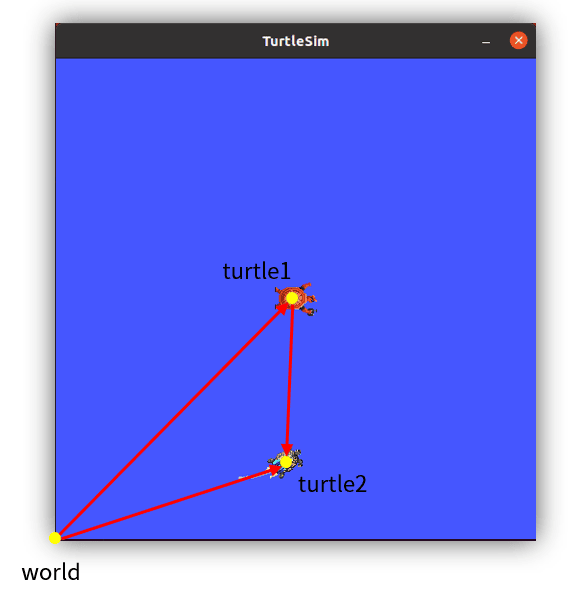
В симуляторе двух черепах мы можем определить три системы координат. Например, глобальная референсная система симулятора называется "world", а системы координат turtle1 и turtle2 находятся в центре двух черепах. Таким образом, относительное положение turtle1 и системы координат world представляет положение turtle1, и аналогично для turtle2.
Чтобы заставить Черепаху 2 двигаться к Черепахе 1, мы проводим линию, соединяющую их, и добавляем стрелку. Не напоминает ли это векторные вычисления, изученные в школе? Векторы используются для описания преобразований координат, поэтому в этом примере следования TF может отлично решить эту задачу.
Длина вектора представляет расстояние, а направление — угол. Зная расстояние и угол, мы можем вычислить скорость, задав случайный промежуток времени. Затем мы инкапсулируем и публикуем топик скорости, и Черепаха 2 начинает двигаться.
Таким образом, суть этого примера — выполнение векторных вычислений с использованием системы координат. Поскольку обе черепахи постоянно движутся, векторы также должны вычисляться с определённой периодичностью. Для этого требуется использование динамической передачи (broadcast) и мониторинга (listening) TF.
7. Создание нового пакета
- Создайте новый пакет в директории src рабочего пространства для хранения наших файлов.
ros2 pkg create pkg_tf --build-type ament_python --dependencies rclpy --node-
name turtle_tf_broadcaster
Выполнение приведённой выше команды создаст пакет pkg_tf и ноду turtle_tf_broadcaster. Соответствующие конфигурационные файлы будут настроены автоматически. Добавьте следующий код в файл turtle_tf_broadcaster.py:
import rclpy # ROS2 Python interface
library
from rclpy.node import Node # ROS2 node class
from geometry_msgs.msg import TransformStamped # Coordinate transformation
message
import tf_transformations # TF coordinate
transformation library
from tf2_ros import TransformBroadcaster # TF coordinate
transformation broadcaster
from turtlesim.msg import Pose # TurtleSim turtle position
message
class TurtleTFBroadcaster(Node):
def __init__(self, name):
super().__init__(name) # Initialize the
ROS2 node parent class
self.declare_parameter('turtlename', 'turtle') # Create a
parameter for the turtle name
self.turtlename = self.get_parameter( # Externally set
parameter value takes precedence; otherwise, default value is used.
'turtlename').get_parameter_value().string_value
self.tf_broadcaster = TransformBroadcaster(self) # Create and
initialize a TF coordinate transformation broadcast object
self.subscription = self.create_subscription( # Create a
subscriber to subscribe to turtle position messages
Pose,
f'/{self.turtlename}/pose', # Use the turtle
name obtained from the parameters
self.turtle_pose_callback, 1)
def turtle_pose_callback(self, msg): # Create a
callback function to handle turtle position messages and convert them into
coordinate transformations
transform = TransformStamped() # Create a
coordinate transformation message object
transform.header.stamp = self.get_clock().now().to_msg() # Set the
timestamp of the coordinate transformation message
transform.header.frame_id = 'world' # Set the
source coordinate system for the coordinate transformation
transform.child_frame_id = self.turtlename # Set the
target coordinate system for the coordinate transformation
transform.transform.translation.x = msg.x # Set the
X, Y, and Z translations in the coordinate transformation
transform.transform.translation.y = msg.y
transform.transform.translation.z = 0.0
q = tf_transformations.quaternion_from_euler(0, 0, msg.theta) # Convert
Euler angles to quaternions (roll, pitch, yaw)
transform.transform.rotation.x = q[0] # Set the
X, Y, and Z rotations (quaternions) in the coordinate transformation
transform.transform.rotation.y = q[1]
transform.transform.rotation.z = q[2]
transform.transform.rotation.w = q[3]
# Send the transformation
self.tf_broadcaster.sendTransform(transform) # Broadcast the
coordinate transformation. When the turtle's position changes, the coordinate
transformation information will be updated in time.
def main(args=None):
rclpy.init(args=args) # Initialize the ROS2
Python interface
node = TurtleTFBroadcaster("turtle_tf_broadcaster") # Create and initialize
a ROS2 node object
rclpy.spin(node) # Loop and wait for
ROS2 to exit
node.destroy_node() # Destroy the node
object
rclpy.shutdown() # Shut down the ROS2
Python interface
- Далее создайте новый файл [turtle_following.py] в той же директории, что и turtle_tf_broadcaster.py, и добавьте следующий код:
import math
import rclpy # ROS2 Python
interface library
from rclpy.node import Node # ROS2 node class
import tf_transformations # TF coordinate
transformation library
from tf2_ros import TransformException # TF left-side
transformation exception class
from tf2_ros.buffer import Buffer # Buffer class for
storing coordinate transformation information
from tf2_ros.transform_listener import TransformListener # Listener class for
coordinate transformations
from geometry_msgs.msg import Twist # ROS2 velocity
control message
from turtlesim.srv import Spawn # Turtle spawning
service interface
class TurtleFollowing(Node):
def __init__(self, name):
super().__init__(name) # Initialize
the ROS2 node parent class
self.declare_parameter('source_frame', 'turtle1') # Create a
parameter for the source coordinate frame name
self.source_frame = self.get_parameter( # Externally
set parameter values ••take precedence; otherwise, use the default values.
'source_frame').get_parameter_value().string_value
self.tf_buffer = Buffer() # Create a
buffer to store coordinate transformation information
self.tf_listener = TransformListener(self.tf_buffer, self) # Create a
coordinate transformation listener
self.spawner = self.create_client(Spawn, 'spawn') # Create a
client to request turtle spawning
self.turtle_spawning_service_ready = False # Flag
indicating whether the turtle spawning service has been requested
self.turtle_spawned = False # Flag
indicating whether the turtle was successfully spawned
self.publisher = self.create_publisher(Twist, 'turtle2/cmd_vel', 1) #
Create a velocity topic for following the moving turtle
self.timer = self.create_timer(1.0, self.on_timer) # Create a
fixed-period timer to control the movement of the following turtle
def on_timer(self):
from_frame_rel = self.source_frame # Source
coordinate system
to_frame_rel = 'turtle2' # Target
coordinate system
if self.turtle_spawning_service_ready: # If the
turtle spawning service has been requested
if self.turtle_spawned: # If the
follower turtle has been spawned
try:
now = rclpy.time.Time() # Get the
current time in the ROS system
trans = self.tf_buffer.lookup_transform( ## Monitor
the coordinate transformation from the source coordinate system to the target
coordinate system at the current moment
to_frame_rel,
from_frame_rel,
now)
except TransformException as ex: # If the
coordinate transformation acquisition fails, report the exception
self.get_logger().info(
f'Could not transform {to_frame_rel} to
{from_frame_rel}: {ex}')
return
msg = Twist() # Create a
speed control message
scale_rotation_rate = 1.0 # Calculate
angular velocity based on the turtle's angle.
msg.angular.z = scale_rotation_rate * math.atan2(
trans.transform.translation.y,
trans.transform.translation.x)
scale_forward_speed = 0.5 # Calculate
linear velocity based on the turtle's distance.
msg.linear.x = scale_forward_speed * math.sqrt(
trans.transform.translation.x ** 2 +
trans.transform.translation.y ** 2)
self.publisher.publish(msg) # Publish
velocity command for the turtle to follow.
else: # If the
following turtle is not spawned.
if self.result.done(): # Check if
the turtle is spawned.
self.get_logger().info(
f'Successfully spawned {self.result.result().name}')
self.turtle_spawned = True
else: # Still no
following turtle spawned.
self.get_logger().info('Spawn is not finished')
else: # If no
turtle spawning service is requested
if self.spawner.service_is_ready(): # If the
turtle spawning server is ready
request = Spawn.Request() # Create a
request data
request.name = 'turtle2' # Set the
content of the request data, including turtle name, xy position, and posture
request.x = float(4)
request.y = float(2)
request.theta = float(0)
self.result = self.spawner.call_async(request) # Send
service request
self.turtle_spawning_service_ready = True # Set the
flag to indicate that the request has been sent
else:
self.get_logger().info('Service is not ready') # Turtle
spawning server is not ready
def main(args=None):
rclpy.init(args=args) # ROS2 Python interface
initialization
node = TurtleFollowing("turtle_following") # Create and initialize a ROS2
node object.
rclpy.spin(node) # Loop and wait for ROS2 to
exit.
node.destroy_node() # Destroy the node object
rclpy.shutdown() # Shut down the ROS2 Python
interface.
- Создайте новую папку launch в пакете pkg_tf, создайте в ней новый файл [turtle_following.launch.py] и добавьте следующее содержимое:
from launch import LaunchDescription
from launch.actions import DeclareLaunchArgument
from launch.substitutions import LaunchConfiguration
from launch_ros.actions import Node
def generate_launch_description():
return LaunchDescription([
DeclareLaunchArgument('source_frame', default_value='turtle1',
description='Target frame name.'),
Node(
package='turtlesim',
executable='turtlesim_node',
),
Node(
package='pkg_tf',
executable='turtle_tf_broadcaster',
name='broadcaster1',
parameters=[
{'turtlename': 'turtle1'}
]
),
Node(
package='pkg_tf',
executable='turtle_tf_broadcaster',
name='broadcaster2',
parameters=[
{'turtlename': 'turtle2'}
]
),
Node(
package='pkg_tf',
executable='turtle_following',
name='listener',
parameters=[
{'source_frame': LaunchConfiguration('source_frame')}
]
),
])
8. Редактирование конфигурационного файла
8.1. Настройка в setup.py
- Импортируйте соответствующие библиотеки
import os
from glob import glob
- Добавьте информацию о ноде turtle_following и добавьте следующую команду для копирования файла запуска в общую директорию (shared) в install.
(os.path.join('share',package_name,'launch'),glob('launch/*')),
9. Компиляция пакета
colcon build --packages-select pkg_tf
10. Запуск программы
- Обновите переменные окружения терминала, затем запустите
ros2 launch pkg_tf turtle_following.launch.py
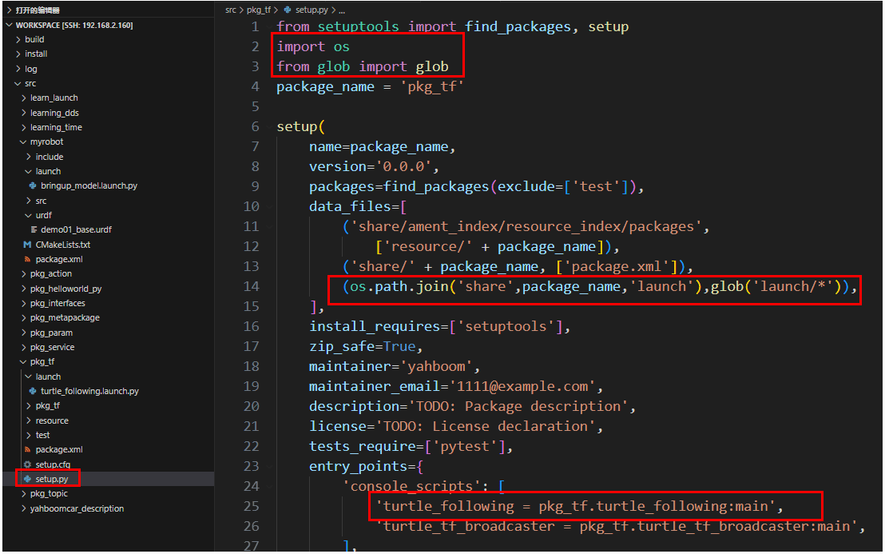
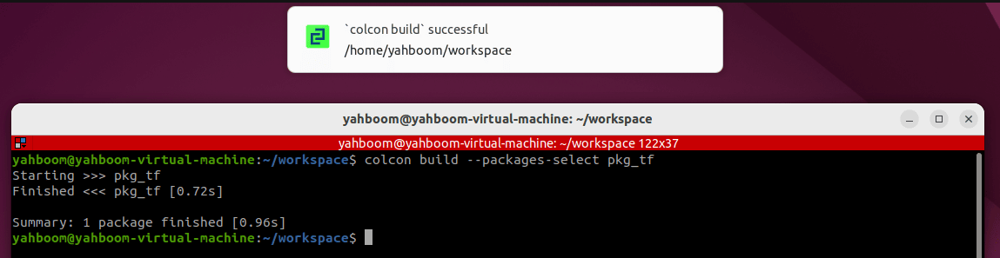
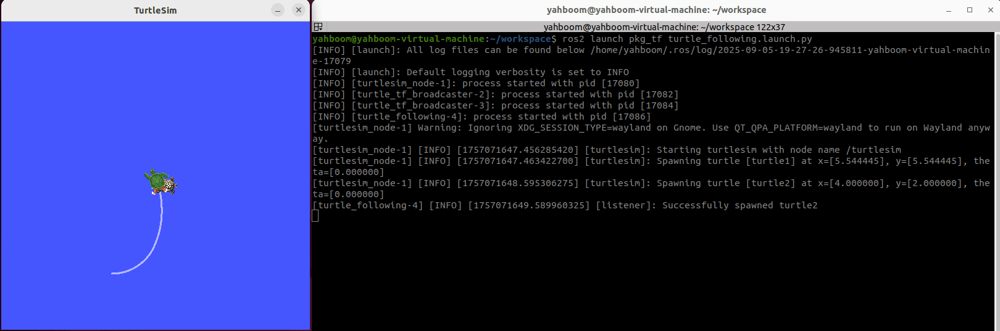
Запустите ноду клавиатурного управления черепахой, управляя движением первой черепахи; вторая черепаха будет автоматически следовать.
ros2 run turtlesim turtle_teleop_key
В этом терминале нажимайте клавиши вверх, вниз, влево и вправо на клавиатуре, чтобы управлять движением одной черепахи. Другая черепаха будет следовать за ней, пока они не совпадут.
11. Продвинутый материал
- Понимание возможностей TF по преобразованию во времени
Buffer автоматически кэширует все отношения преобразования TF в системе TF за последние 10 секунд (можно задать любую желаемую продолжительность кэширования с помощью конструктора Buffer). Все преобразования в буфере привязаны к временным меткам и прослеживаемы. Даже если две системы координат относятся к разным моментам времени, отношение преобразования между ними может быть найдено. Подробное объяснение этого принципа приведено в источниках, посвящённых проектированию систем TF (источники находятся в папке этого раздела, либо можно перейти по ссылке в начале раздела).
Ниже приведено дополнение к описанному выше примеру следования черепахи. Красная стрелка показывает, что преобразование между двумя системами координат в разные моменты времени можно найти во временном измерении.
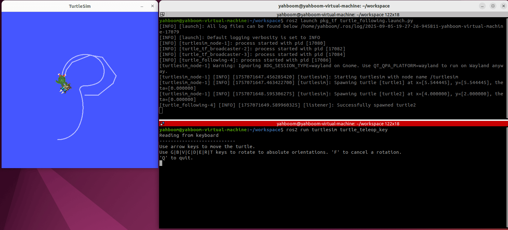
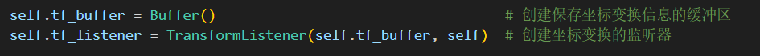
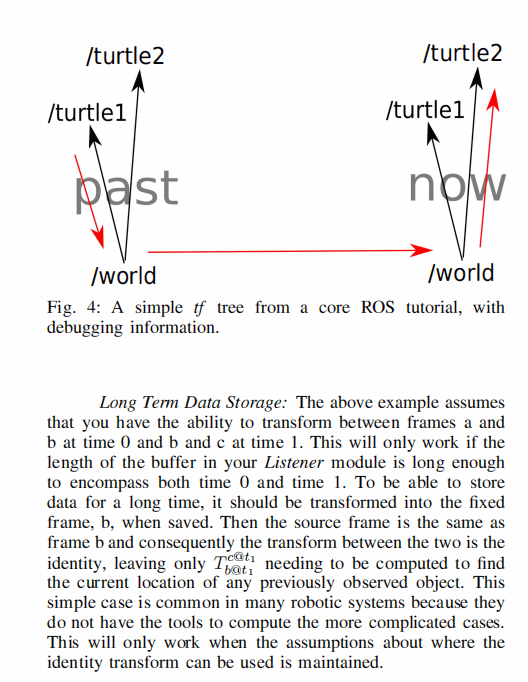